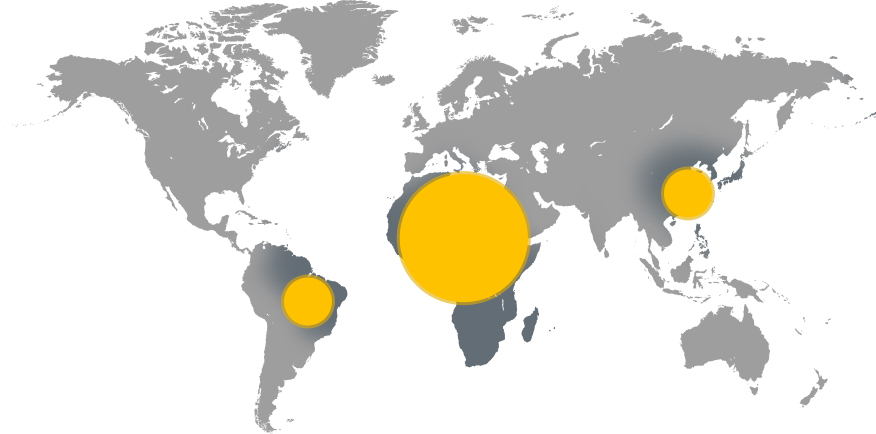

Le Noma
Parce qu’elle tue de jeunes enfants en seulement quelques semaines, après avoir dévoré leur visage.
Parce que les rares survivants sont défigurés et souffrent de séquelles fonctionnelles graves.
Le Noma est sans doute une des maladies les plus effroyables qu’il soit.
Pourtant, il est possible de soigner et de faire reculer le Noma.
Le Noma
Le Noma tue les enfants après leur avoir dévoré le visage.
Le Noma, également appelé maladie de la pauvreté a été éradiqué en Europe à la fin du 19ème siècle.
Maladie bactérienne, il affecte d’abord la bouche puis ronge le visage des enfants.
En l’absence de soins immédiats, il conduit souvent à une mort atroce.
En savoir plus140 000 Cas de Noma par an
2 à 6 ans Âge moyen des victimes
80 % De Mortalité
L'afrique
Est le continent le plus touché
On distingue les différentes phases d’évolution :
-
1
Phase initiale :
La maladie s’installe en 24 à 48h, avec l’apparition d’un vésicule dans la gencive, puis d’ulcérations, et détérioration de l’état général avec de fortes fièvres et des douleurs vives à l’alimentation
-
2
Phase d'état :
Destruction rapide des tissus
Chute de l’escare qui laisse à nu les dents et les os
Alimentation impossible
Décès fréquent -
3
Phase de séquelles :
Si le patient survit, il gardera de graves séquelles fonctionnelles qui souvent l’empêcheront d’ouvrir la bouche et de s’alimenter normalement. La défiguration créera un isolement du patient au plan social. Les seuls recours sont la rééducation et la chirurgie réparatrice
Facile à soigner, le Noma tue
parce qu'il n'est pas connu.
Faire reculer le Noma est un enjeu
de prévention et d'accès aux soins